This page will explain how use a WebApp in ArcGIS Online
From the ArcGIS Online (AGOL) homepage, navigate to the User Group page
Search for or scroll to the Web App
Click on the Web App to navigate to the item details then click on View Application
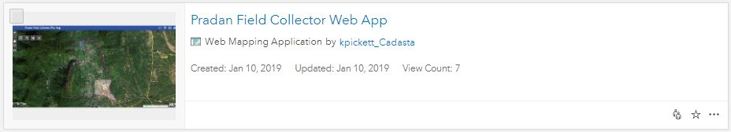
OR
Open the Web App by clicking on the thumbnail
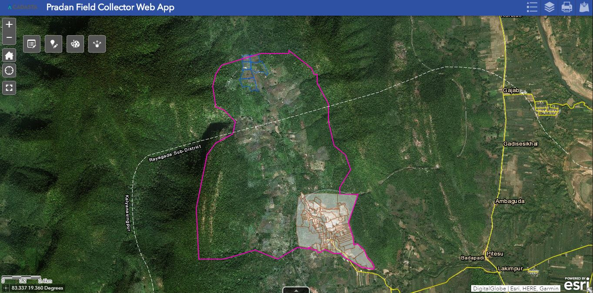
See the Web App
You can zoom in and out, go to the home location, navigate to your current location, and start full screen mode by using these buttons
Note: At any point you can place your mouse over any of the buttons and an identification pop-up will name the button
With the Edit button you can open the Edit Widget to add, delete, and edit features 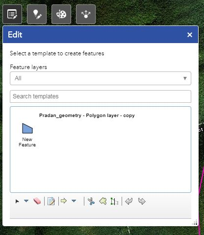
With the Smart Editor button you can open the Smart Editor Widget to create new features 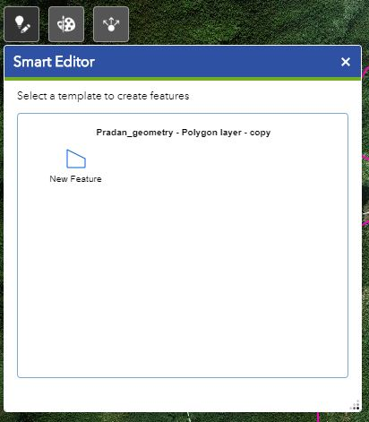
With the Draw button you can open the Draw Widget to add polygons, lines, points, and text 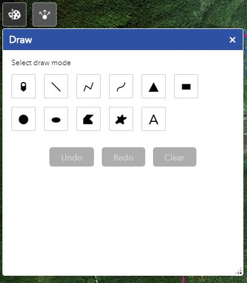
With the Share button you can open the Share Widget to email the web app link easily 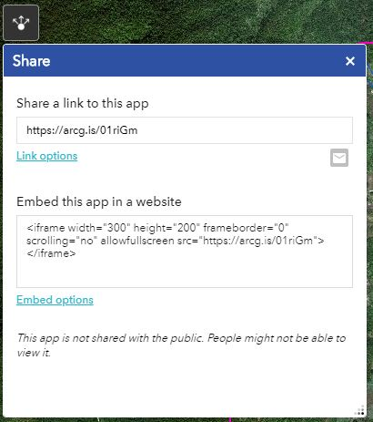
The scale bar looks like this and is in the left-bottom corner of the web app 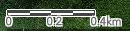
The attribute table can be seen by pressing Open Attribute Table button 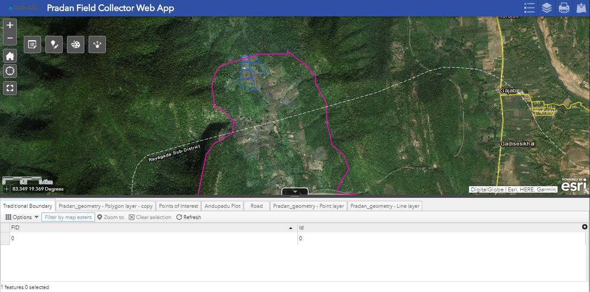
The Legend button shows the map’s legend 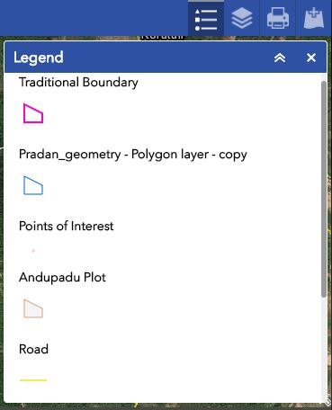
The Layer list buttondisplays the map’s layers 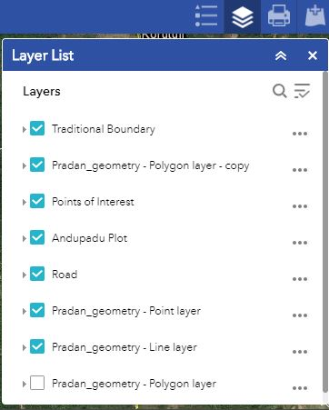
The Print button provides advanced map output options 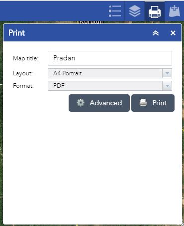
See the Advanced option for map layout options 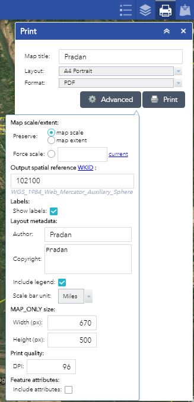
The Add Data button allows you to search for more layers in your User Group and to add those or others from your files to the map 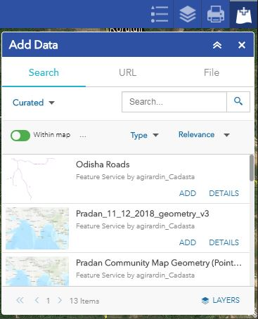
Additional Resources